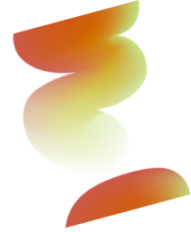

Rouwtaak een
Het verlies aanvaarden
Ontdek hoe je de realiteit van het verlies kunt omarmen.

Ontdek hoe je de realiteit van het verlies kunt omarmen.
Sta jezelf toe om de pijn te voelen en leer om deze op jouw manier te verwerken.
Vind jouw weg in een wereld die nu anders is door het verlies van je dierbare.
Ontdek hoe je een nieuw pad kunt inslaan terwijl je het verlies een betekenisvolle plek geeft in je leven.